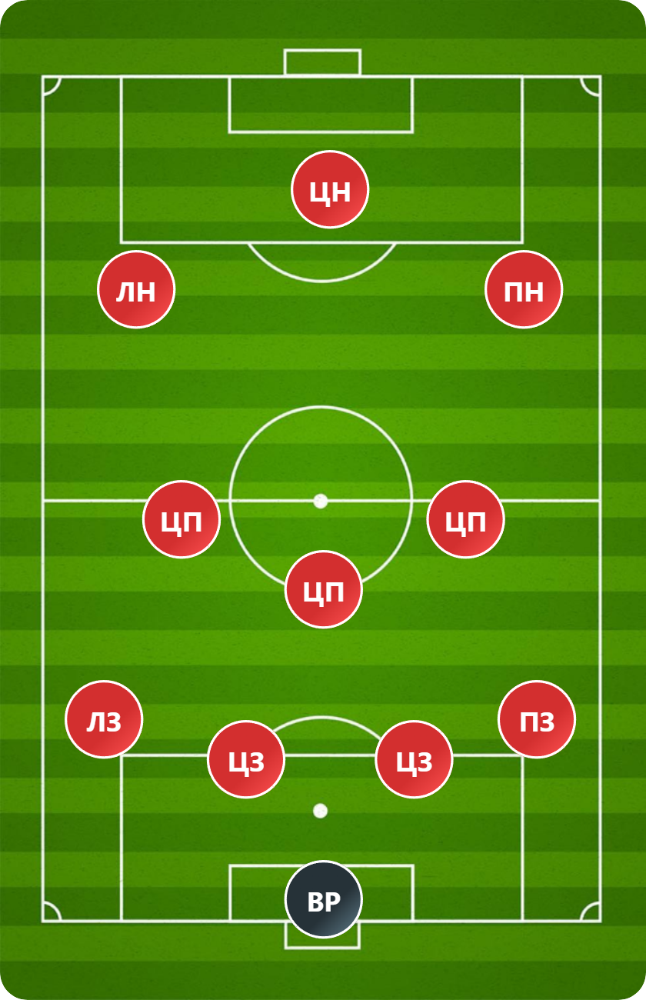
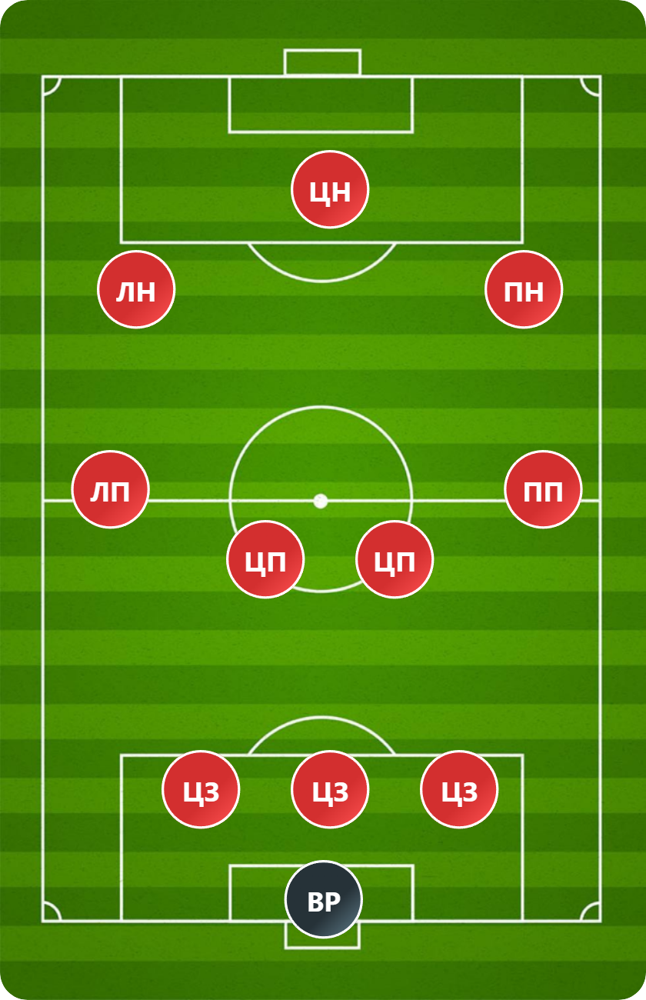
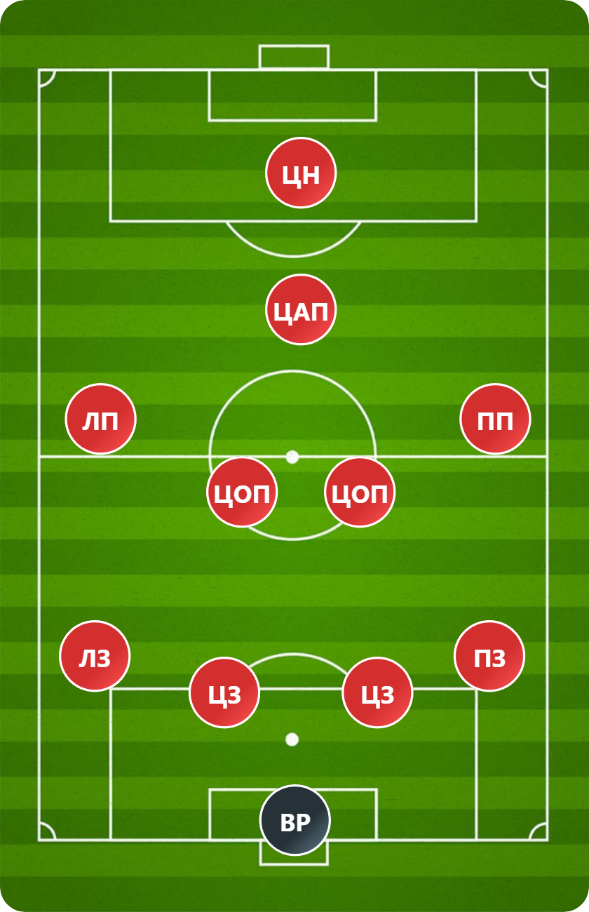
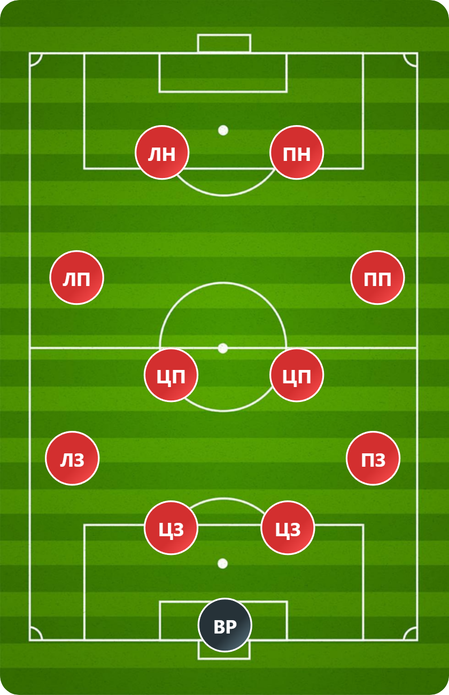

Футбольные тактики
Тактика: 4-3-3
Классическая атакующая схема: 4 защитника, 3 полузащитника, 3 нападающих. Используется командой для доминирования в атаке и контроля мяча.
Тактика: 3-4-3
Схема с тремя центральными защитниками и широкой полузащитой. Позволяет команде гибко перестраиваться в обороне и атаке.
Тактика: 4-2-3-1
Тактическая схема 4-2-3-1, особенно в её интерпретации с акцентом на гибкость и широкую полузащиту, представляет собой универсальный инструмент, позволяющий команде эффективно действовать как в обороне, так и в атаке. Её гибкость заключается в способности адаптироваться к сопернику и игровой ситуации, меняя позиционное расположение игроков.
Тактика: 4-4-2
Тактика 4-4-2 — классическая и проверенная временем схема, предлагающая баланс между обороной и атакой. Её эффективность зависит от индивидуальных качеств игроков и тренерской интерпретации, поскольку существует множество вариаций этой схемы.
Футбольные тактика Арсенала
Тактика «Арсенала» под руководством Микеля Артеты характеризуется динамичным, атакующим футболом, основанным на высоком прессинге, быстрых переходах и точном пасе. Однако, это не просто бег вперед – она сложна и многогранна, с нюансами, меняющимися в зависимости от соперника.
Основные принципы:
1. Высокий прессинг: «Арсенал» стремится отбирать мяч как можно выше на поле, используя агрессивный прессинг на всех линиях. Это требует отличной координации между игроками, дисциплины и высокой скорости реакции. Прессинг часто направлен на перекрытие основных зон паса соперника, вынуждая его совершать ошибки или делать длинные, неточные передачи. Интенсивность прессинга может варьироваться в зависимости от ситуации.
2. Быстрые переходы: После отбора мяча «Арсенал» стремительно переходит в атаку, используя скорость и технику своих игроков. Это часто осуществляется короткими, точными пасами, позволяющими быстро продвинуться к воротам соперника. В этом ключевую роль играют крайние защитники, активно подключающиеся к атакам.
3. Позиционный футбол: При владении мячом «Арсенал» использует комбинационный футбол, ориентированный на создание численного преимущества в определённых зонах поля. Игроки постоянно меняют позиции, создавая пространство и варианты для паса. Они умело используют короткий и средний пас, комбинируя их с продвижением мяча через центр и фланги.
4. Комбинации в атаке: Атаки «Арсенала» часто основаны на сложных комбинациях, включающих проникающие передачи, навесы с флангов, и завершающие удары как с близкого, так и с дальнего расстояния. Они активно используют пространство за спинами защитников, а также проходы с флангов и диагональные передачи.
5. Гибкая структура: Состав и тактическая схема «Арсенала» могут меняться в зависимости от соперника и ситуации на поле. Команда может использовать как классическую 4-3-3, так и варианты с тремя центральными защитниками или более атакующей расстановкой.
Ключевые элементы:
1. Роль крайних защитников: Они играют очень важную роль в атаке, часто выступая как дополнительные вингеров. Их подключения вперед растягивают оборону соперника, создавая пространство для других игроков.
2. Центральные полузащитники: Они являются связующим звеном между обороной и атакой. Их задача – контролировать игру, распределять мяч и создавать голевые моменты.
3. Нападающие: Они должны быть мобильными, техничными и уметь завершать атаки. Их обязанность – забивать голы и создавать проблемы для защитников соперника.
Слабые стороны (потенциальные):
1. Зависимость от скорости и точности паса: При потере точности передач и скорости игры, эффективность тактики значительно снижается.
2. Уязвимость при контратаках: Высокий прессинг может оставлять пространство для быстрых контратак соперника, что требует высокой концентрации от игроков обороны.
3. Физическая выносливость: Высокоинтенсивный стиль игры требует огромных физических затрат от игроков.